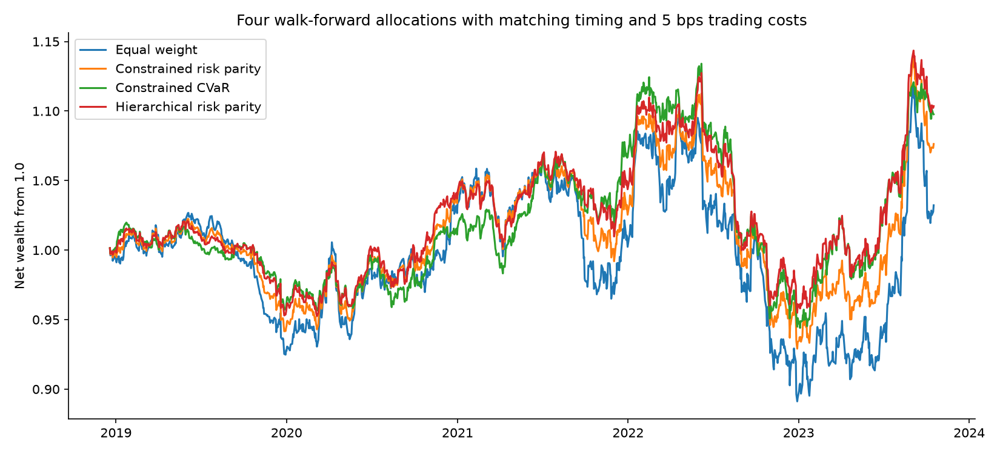

2018-01-01 to 2023-10-17 · 1512 observations · 99% VaR
Measured research results. Cross-asset validation is synthetic; public sample is historical equities only.
| Model | Exceptions | Rate | Coverage p | Quantile loss |
|---|---|---|---|---|
| historical | 18 | 1.43% | 0.1508 | 0.000208 |
| parametric | 27 | 2.14% | 0.0004021 | 0.000211 |
| monte_carlo | 27 | 2.14% | 0.0004021 | 0.000211 |
| filtered_historical | 14 | 1.11% | 0.6969 | 0.000204 |
| block_bootstrap | 18 | 1.43% | 0.1508 | 0.000207 |
| student_t | 18 | 1.43% | 0.1508 | 0.000195 |
Lower quantile loss is preferable on this shared sample. Coverage non-rejection does not establish correctness. No model is selected using these test results.

{
"ES attribution": {
"expected_shortfall": 0.0260758107151062,
"asset_contributions": [
0.016797220868061995,
-0.0007434024767378014,
0.006459621210967815,
0.003562371112814197
],
"reconciliation_error": 3.469446951953614e-18
},
"reverse stress": {
"loss_target": 0.1,
"asset_shocks": [
-0.20810659526220712,
-0.022327476361361155,
-0.1010618751353883,
-0.0685040532410435
],
"portfolio_loss": 0.1,
"mahalanobis_distance": 13.110690682063767,
"interpretation": "Covariance-distance severity, not a calibrated event probability."
}
}
See summary.json and enhancements.json for costs, constraints, full strategy results and uncertainty.